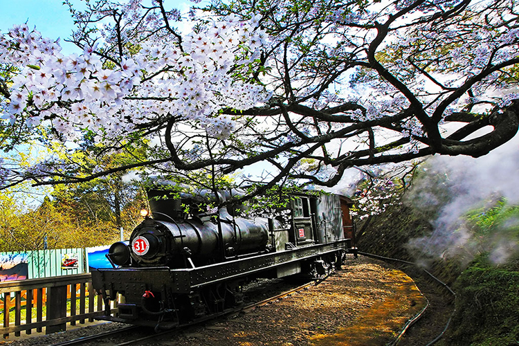
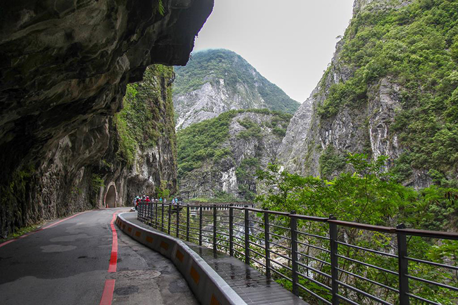

Home
About Taiwan
Famous Food
Tourist Attractions
About
Attractions
Check out some popular tourist attractions of Taiwan →→→
Taipei 101
National Palace Museum
Shilin Night Market
Jiufen

Alishan Forest Railway

Taroko National Park